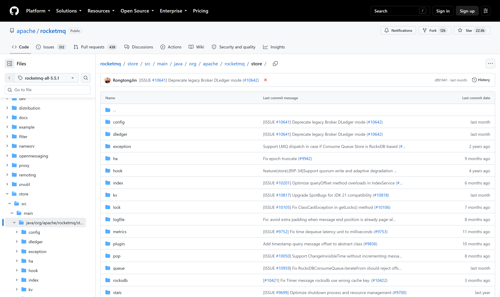
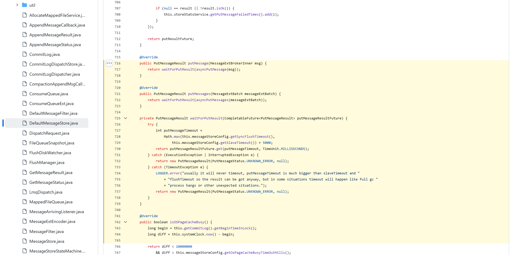
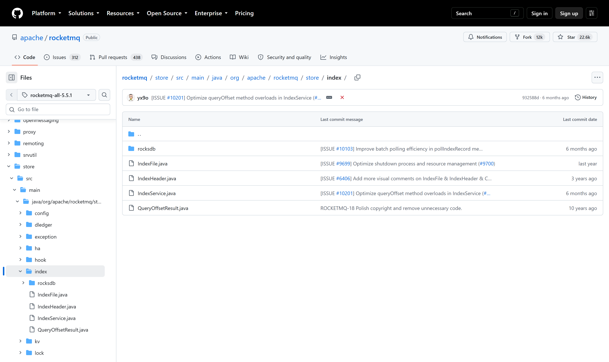

OSS PROJECT INTRO · APACHE ROCKETMQ 系列第 5 期：架构与源码导读（收官）
上一期我们把三件武器用进了订单一致性，这期继续——也是 RocketMQ 系列的收官期：进源码。策略是不求全、只求两条主路：写入主路从 DefaultMessageStore.putMessage 出发，经 CommitLog.asyncPutMessage 到 doAppend 字节级追加、最后刷盘落稳；分发主路跟着 ReputMessageService 从写入位点重放统一日志，看 ConsumeQueue 与 IndexFile 是怎么被"顺手"建出来的。本期源码全部锚定 git 标签 rocketmq-all-5.5.1（与本系列版本基准一致），每处引用都给了文件与行号，打开仓库即可对照。读码路线表在最后一节——五期收官，你拿到的不只是知识，是一条能独立走下去的读码路。
先把仓库全景铺开。以 rocketmq-all-5.5.1 标签为准，顶层模块包括 client（经典客户端）、common、broker（Broker 主逻辑）、store（存储引擎）、namesrv（路由中心）、remoting（经典协议通信）、proxy（5.x 接入层）、controller（切换仲裁）、tieredstore（分层存储）等。五个概念里你已经在第 3 期见过它们各自的名字，现在它们落成了目录。
从哪里读起？答案是 store 模块，理由有三：它是消息队列的心脏——"消息不丢"的承诺全部兑现在这里；它是概念密度最高的模块——第 3 期的 CommitLog、ConsumeQueue、IndexFile、重平衡后的消息投递，全部能在里面找到代码形态；它还是最好验证的模块——读完写路径，回头跑一遍第 2 期的 tools.sh，日志里的每一步都能对上号。其余模块（broker 的请求处理、remoting 的协议编解码）都值得读，但先拿下心脏，其余是它的服务生。

读 store 模块的方法是先立骨架再填肉：DefaultMessageStore 是门面类（三千多行），所有读写与后台服务的调度从它出发；写主路的核心是 CommitLog（两千五百多行）；logfile 包的 MappedFile 是内存映射文件的抽象——RocketMQ "把磁盘当内存用"的物理载体；读主路落在一个 queue 包加根包的 ConsumeQueue；按键索引独立成 index 包。高可用（ha、dledger）、配置（config）、5.x 消费形态（pop）各居其位。骨架立住，读码不再迷路。

写入主路四步走，行号均以 rocketmq-all-5.5.1 为准：
// 1. 门面入口：DefaultMessageStore.java 第 716 行
public PutMessageResult putMessage(MessageExtBrokerInner msg) {
return waitForPutResult(asyncPutMessage(msg)); // 同步包异步
}
// 2. 统一日志：CommitLog.java 第 999 行 asyncPutMessage
// 持锁定位/新建 MappedFile（单文件 1 GB，写满滚动）
// 3. 字节级追加：第 1990 行 doAppend——
// 消息体编成字节写入映射缓冲，返回 AppendMessageResult
// 4. 落盘与复制：第 1360 行 handleDiskFlushAndHA——
// 刷盘策略决定何时 fsync，主从复制另走 ha 通道四步里藏着一个值得停下来看的设计：同步入口只是异步主路的包装（第 716 行一眼见底），真正的写入逻辑全在异步链上，这让刷盘与复制的等待可以精细控制；追加是无脑顺序的——doAppend 不关心 Topic 与业务语义，把消息当字节流追加进当前 1 GB 文件，写满换下一个；落盘是策略不是动作——同步刷盘等 fsync 返回、异步刷盘攒着写，选择权交给配置，代码里两组服务并存（第 3 期的 8g 堆外内存设计也在这条路上见真章）。
分发主路的主角是 DefaultMessageStore 的内部类 ReputMessageService（第 2655 行）：它维护一个重放位点，紧跟写入位点从统一日志里逐条读出刚落的消息，组装成轻量的分发请求，交给 doDispatch（第 2064 行）；分发器把请求转派给注册好的构建器——一个往队列索引追加 20 字节条目，一个往按键索引登记哈希。这就是"统一顺序写加多索引"在代码里的真实形态：日志是唯一事实源，索引是日志的投影，投影丢了可以重放重建（宕机恢复正靠这一点）。读完这两条主路，第 3 期的存储原理图就在源码里逐行兑现了。
最后把五期沉淀成一张路线表。建议环境先就位（第 2 期），源码切到 rocketmq-all-5.5.1 标签，边读边在本地跑通对照：
| 阶段 | 目标 | 源码入口（5.5.1 行号） |
|---|---|---|
| 第 1 步 · 建立体感 | 本地跑通收发，盯日志对照 | 第 2 期环境 + tools.sh 示例 |
| 第 2 步 · 读写入口 | 门面类怎么调度读写 | DefaultMessageStore.putMessage（716）/ getMessage（853） |
| 第 3 步 · 写入主路 | 追加写与刷盘复制 | CommitLog.asyncPutMessage（999）→ doAppend（1990）→ handleDiskFlushAndHA（1360） |
| 第 4 步 · 分发主路 | 索引怎么被构建 | ReputMessageService（2655）→ doDispatch（2064）→ queue 与 index 包 |
| 第 5 步 · 按需深入 | 高可用与 5.x 形态 | ha 与 dledger 包、controller 与 proxy 模块 |
三条读码心法带走：第一，带着一条消息读——从 tools.sh 发出的那条消息出发打断点，比干读快一倍；第二，先主路后支路——两条主路没走通之前，别进 ha、dledger 这些支路迷宫；第三，行号是路标不是终点——版本演进行号会漂，认方法名与调用关系，认"消息从进来到落稳经过谁"的骨架。
每题点击选项立即反馈 · 共 3 题
1. 写入主路的正确顺序是？
2. ReputMessageService 的职责是？
3. "索引是日志的投影"这个说法，对应源码里的什么性质？
先把设计看清楚：门面方法 putMessage 一行——调 asyncPutMessage 拿到 CompletableFuture，再用 waitForPutResult 带超时等待结果。同步语义是"包装"出来的，不是另一条实现路径。换来的有三样。第一，一份写逻辑两种出口：同步与异步共享同一条追加加刷盘的链路，Bug 修一处、优化是全体的，两套实现最大的成本从来不是代码量，是行为漂移。第二，等待策略可精细：超时时间综合了刷盘超时与主从复制超时来算，同步调用可以选择等到刷盘落稳才返回（消息不丢的语义边界），异步调用则完全不阻塞发送线程。第三，背压有抓手：异步链上的队列与回调是天然的流量蓄水池，生产端过载时优先拒绝而不是拖垮整条链。代价也有两样。一是栈变深、调试变绕：线程切换加上回调链，异常堆栈跨越线程，新手在源码里跟丢的往往就是这一跳；二是语义有陷阱：同步调用者容易误以为"返回即持久化"，实际返回点取决于刷盘配置——同步发送加异步刷盘的组合，返回时消息只是进了页缓存，机器断电仍有窗口。业务代码里的同款到处都是：JDBC 驱动的同步 API 包在连接池的异步资源管理上、Dubbo 的同步调用是对 Future 的 get 包装、Spring MVC 的同步 Controller 底层跑在异步 Servlet 之上——"异步内核加同步外壳"是服务端软件的通用骨架，读透 RocketMQ 这一处，等于拿到一把通用的源码钥匙。
30 行预算下的最小复刻：一个 AppendOnlyLog 类，一个数组式索引。AppendOnlyLog 持有一个 RandomAccessFile（或 FileChannel），提供 append(byte[])：把长度加数据顺序写入文件尾，返回全局偏移——这就是 CommitLog 的骨架，顺序追加、偏移即地址；再写一个 Index 类，ArrayList 每项存 20 字节语义的三元组（日志偏移、长度、时间戳），get(i) 时拿着日志偏移去 AppendOnlyLog 定位读取——这就是 ConsumeQueue 的骨架，两级跳读。30 行写完，骨架sense已经齐了：统一写路径、偏移寻址、索引即投影。与真实实现差的最关键一环，是内存映射与页缓存的"通道"。RandomAccessFile 的 write 是普通系统调用，数据从用户态拷进内核；而 MappedFile 用 mmap 把文件直接映射进进程地址空间，追加就是往映射缓冲里写字节，读也直接命中页缓存，操作系统自己决定什么时候刷盘——RocketMQ 高吞吐低延迟的物理魔法不在算法里，在这层映射里。剩下的差距按重要度排：多线程下追加位置的并发控制（真实实现用自旋锁保护映射文件切换）；单文件 1 GB 的滚动与文件组管理；崩溃恢复（投影重建的真实用途）；刷盘服务的独立线程与策略化。这个练习的价值在最后一问的答案里：当你发现 30 行骨架加一层 mmap 才像样时，你就真正理解了为什么第 3 期说"高吞吐的物理基础是顺序写、页缓存、内存映射"——存储引擎的深，不在代码多，在系统层的每一分克制。
RocketMQ 系列五期，带走五句话：

收官不是终点：官方文档是最好的下一站——Domain Model 与 Feature Behavior 章节值得通读，Deployment 章节管生产部署，GitHub 仓库的 release notes 管版本演进。把五期的概念地图和这期的行号地图叠在一起，RocketMQ 对你不再是黑盒。
Primary source：apache/rocketmq 源码仓库（git 标签 rocketmq-all-5.5.1）——本期行号与文件引用全部锚定该标签（2026-09-30 核对）；概念与文档口径见 RocketMQ 官方文档。